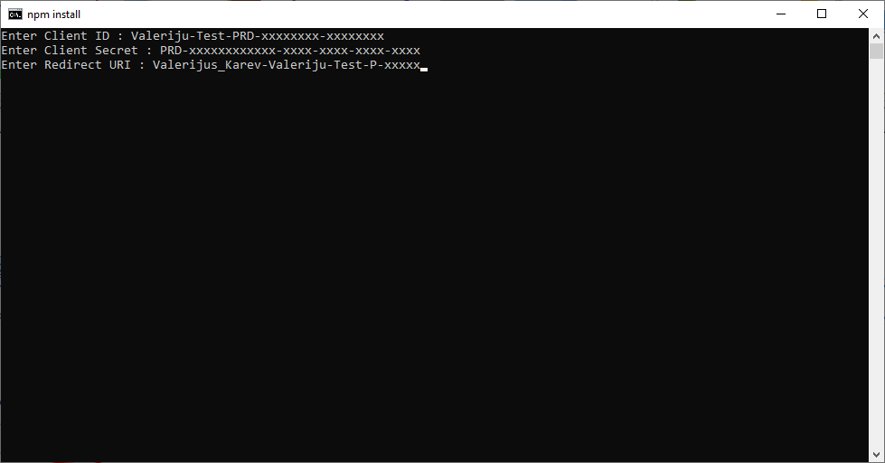
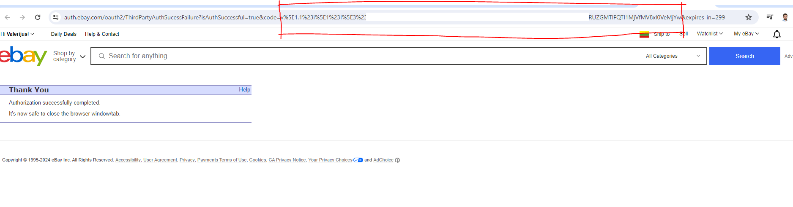
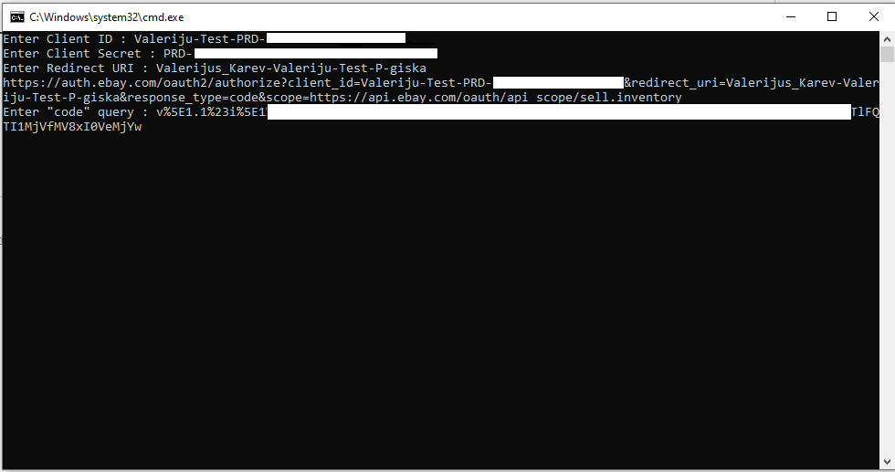
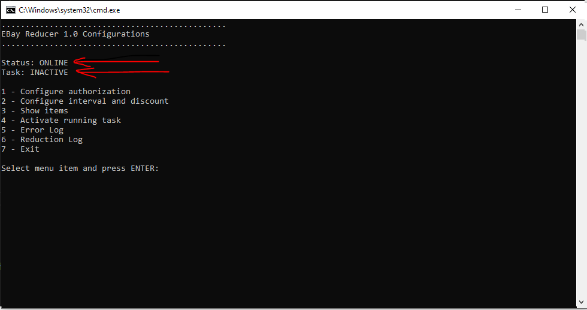
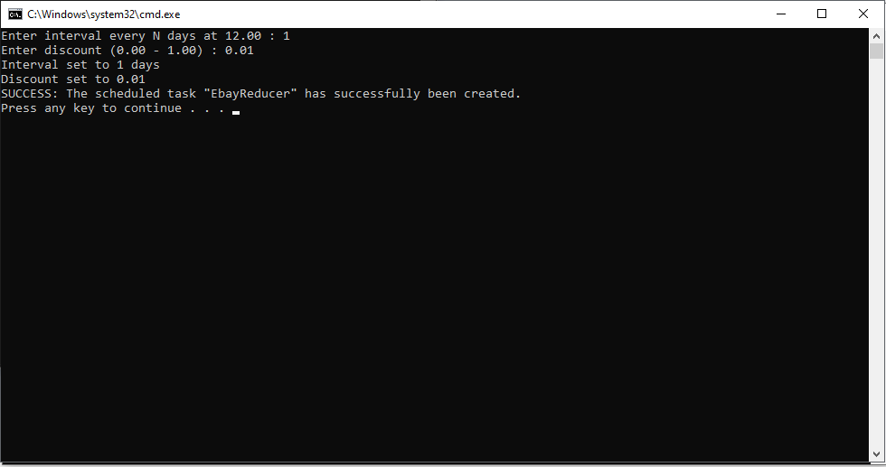
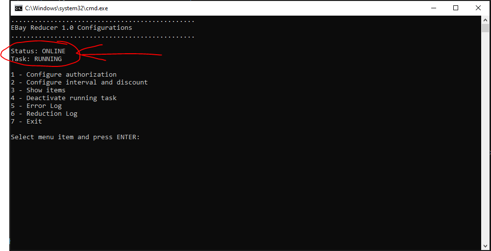

Download MAIN APPLICATION
Generate Client ID, Client Secret and RuName in EBAY DEVELOPER
Download NODE.JS v16.20
Execute “setup.bat” file in main folder.
Running the first time it will install all needed dependencies.
Go to KEYS and get the first keys ( CLIENT ID and CLIENT SECRET)
Go to AUTH and get the Redirect URI name

Enter all three keys, then you will be redirected to Ebay login page
After entering you credentials you will be redirected to the success page
The CODE is in the URL adress between "code=" amd "&expires_in"
Copy it to the last field
Copy it to the last field and press enter
The programm will declare that the keys are set and restart the setup
Status should be ONLINE, Task is INACTIVE
You can test and get the item list by pressing "3"

You can change the interval (every X days from 12:00) and discount (0.00-1.00) by pressing "2"
The defaults are 0.01 per item every 1 day
The scheduled task will be created automaticaly
The status ONLINE and ACTIVE declares that everything is running.
